विश्व-राजनीति के बारे में पढ़ते हुए अक्सर हमारा सामना 'सुरक्षा' (Security) अथवा 'राष्ट्रीय सुरक्षा' (National Security) जैसे शब्दों से होता है। अक्सर यह कहा जाता है कि यह सुरक्षा का मसला है और देश की भलाई के लिए बड़ा जरूरी है। ऐसा कहने का मकसद यह जताना होता है कि मसला बड़ा महत्वपूर्ण अथवा गुप्त है और इस कारण उस पर खुली चर्चा नहीं हो सकती। लेकिन लोकतंत्र में कोई भी बात इतनी ढकी-छिपी नहीं रखी जा सकती। सुरक्षा के बारे में हमें और ज्यादा जानने की जरूरत है।
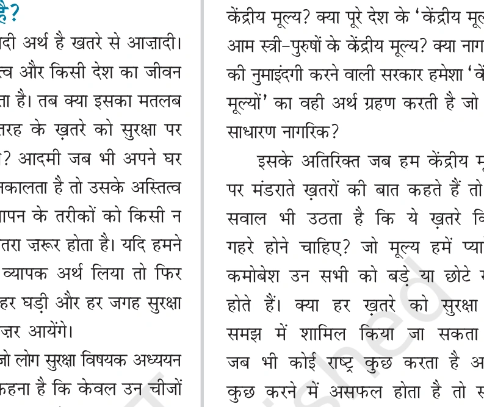
एनसीईआरटी कार्टून: युद्ध और सुरक्षा (Ares - War Cartoon by Cagle):
कार्टून का विवरण: कार्टून में युद्ध के देवता (Ares) और युद्ध के विनाशकारी रूप को दिखाया गया है।
कार्टून का संदेश: "युद्ध का मतलब है असुरक्षा, विध्वंस और मृत्यु! युद्ध किसी को क्या सुरक्षा दे पायेगा?" यह कार्टून यह सवाल उठाता है कि क्या वास्तव में सैन्य युद्धों द्वारा कभी स्थाई सुरक्षा प्राप्त की जा सकती है।
सुरक्षा का बुनियादी अर्थ है—खतरे से आजादी (Freedom from Threats)। मानव का अस्तित्व और किसी देश का जीवन खतरों से भरा होता है। तब क्या इसका मतलब यह है कि हर तरह के खतरे को सुरक्षा पर खतरा माना जाए? सुरक्षा का अध्ययन करने वाले विद्वानों का कहना है कि केवल उन चीजों को 'सुरक्षा' से जुड़ी चीजों का विषय बनाया जाए जिनसे जीवन के 'केंद्रीय मूल्यों' (Central Values) को गंभीर खतरा हो।
सुरक्षा (Security): इसका रिश्ता केवल बड़े गंभीर खतरों से है—ऐसे खतरे जिनको रोकने के उपाय न किए गए, तो हमारे केंद्रीय मूल्यों को अपूरणीय क्षति पहुंचेगी।
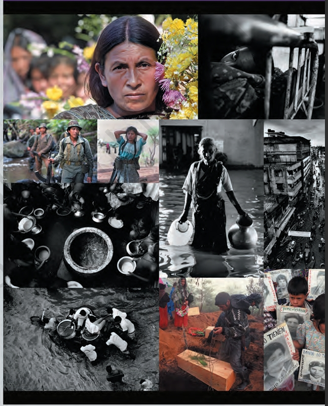
एनसीईआरटी चित्र विवरण: सुरक्षा के दो भिन्न पहलू (NCERT Page 1 Collage)
ये चित्र सुरक्षा के दो भिन्न पहलुओं को दर्शाते हैं:
1. ग्वाटेमाला (Guatemala): ग्वाटेमाला में चल रहे गृह-युद्ध के दृश्य, जहाँ माताएं युद्ध में खोए अपने बच्चों का इंतजार कर रही हैं और युद्ध में शहीद हुए लोगों को याद किया जा रहा है।
2. बांग्लादेश (Bangladesh): बांग्लादेश में बाढ़ जैसी प्राकृतिक आपदा से पैदा हुई असुरक्षा को दिखाया गया है।
विभिन्न संदर्भों और स्थितियों को ध्यान में रखना जरूरी है क्योंकि इसी से सुरक्षा के बारे में हमारा नजरिया बनता है। सुरक्षा की धारणा को मुख्य रूप से दो श्रेणियों में समझा जाता है:
- पारंपरिक धारणा (Traditional Notion): जिसमें सैन्य खतरे, बाहरी आक्रमण, शक्ति-संतुलन और सीमा रक्षा शामिल है।
- अपारंपरिक धारणा (Non-Traditional Notion): जिसमें मानवाधिकार, गरीबी, महामारी, विस्थापन और पर्यावरण संकट शामिल हैं।
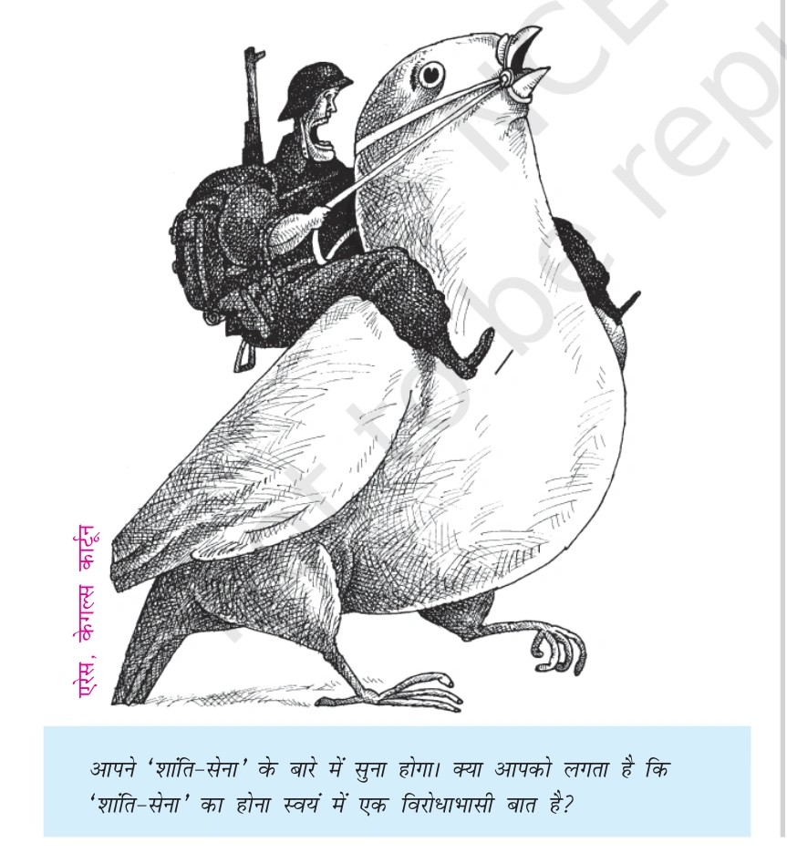
एनसीईआरटी कार्टून: शांति-सेना का विरोधाभास (Ares, Cagle Cartoon - NCERT Page 64):
कार्टून का विवरण: कार्टून में एक भारी हथियारों से लैस सैनिक को शांति के प्रतीक 'सफेद फाख्ता' (Peace Dove) पर सवार होकर उसे लगाम से नियंत्रित करते हुए दिखाया गया है।
एनसीईआरटी प्रश्न: "आपने 'शांति-सेना' के बारे में सुना होगा। क्या आपको लगता है कि 'शांति-सेना' का होना स्वयं में एक विरोधाभासी बात है?"
एनसीईआरटी छात्र विचार: "मेरी सुरक्षा के बारे में किसने फैसला किया? कुछ नेताओं और विशेषज्ञों ने? क्या मैं अपनी सुरक्षा का फैसला खुद नहीं कर सकती?"
शांति-सेना (Peacekeeping Force): संयुक्त राष्ट्र संघ (UN) द्वारा विश्व के विभिन्न अशांत क्षेत्रों में शांति बनाए रखने के लिए सदस्य देशों की सेनाओं को मिलाकर 'शांति-सेना' गठित की जाती है।
अधिकतर जब हम सुरक्षा के बारे में कुछ पढ़ या सुन रहे होते हैं तो हमारा सामना सुरक्षा की पारंपरिक अर्थात राष्ट्रीय सुरक्षा (National Security) की धारणा से होता है। सुरक्षा की पारंपरिक अवधारणा में सैन्य खतरे (Military Threat) को किसी देश के लिए सबसे ज्यादा खतरनाक माना जाता है। इस खतरे का स्रोत कोई दूसरा मुल्क होता है जो सैन्य हमले की धमकी देकर संप्रभुता, स्वतंत्रता और क्षेत्रीय अखंडता जैसे किसी देश के केंद्रीय मूल्यों के लिए खतरा पैदा करता है।
बुनियादी तौर पर किसी सरकार के पास युद्ध की स्थिति में तीन विकल्प होते हैं:
- आत्मसमर्पण करना: दूसरे पक्ष की बात को बिना युद्ध किए मान लेना। (कोई भी सरकार इसे अपनी नीति नहीं घोषित करती)
- अपरोध (Deterrence): युद्ध से होने वाले नाश को इस हद तक बढ़ाने के संकेत देना कि दूसरा पक्ष सहमकर हमला करने से बाज आए। (युद्ध की आशंका को रोकना)
- रक्षा करना (Defense): यदि युद्ध ठन जाए तो अपनी रक्षा करना ताकि हमलावर देश अपने मकसद में कामयाब न हो सके और पीछे हट जाए या हमलावर को पराजित कर देना।
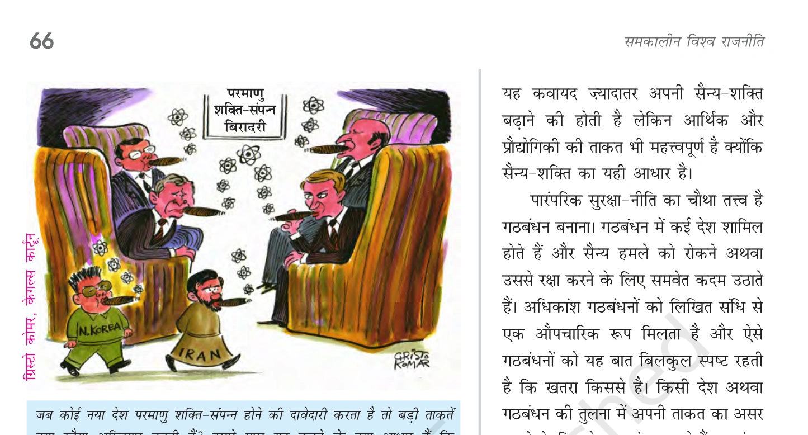
एनसीईआरटी कार्टून: बड़ी ताकतों का रवैया (NCERT Page 66):
एनसीईआरटी पाठ्यपुस्तक प्रश्न: "जब कोई नया देश परमाणु शक्ति-संपन्न होने की दावेदारी करता है तो बड़ी ताकतें क्या रवैया अख्तियार करती हैं? हमारे पास यह कहने के क्या आधार हैं कि परमाण्विक हथियारों से लैस कुछ देशों पर तो विश्वास किया जा सकता है परंतु कुछ पर नहीं?"
परंपरागत सुरक्षा-नीति का एक और तत्व है। इसे 'शक्ति-संतुलन' (Balance of Power) कहते हैं। कोई देश अपने अड़ोस-पड़ोस में देखने पर पाता है कि कुछ मुल्क छोटे हैं तो कुछ बड़े। इससे इशारा मिल जाता है कि भविष्य में किस देश से उसे खतरा हो सकता है।
शक्ति-संतुलन (Balance of Power): कोई सरकार दूसरे देशों से अपने शक्ति-संतुलन का पलड़ा अपने पक्ष में बैठाने के लिए जी-तोड़ कोशिश करती है। जो देश नजदीक हों, जिनके साथ अनबन हो या जिन देशों के साथ अतीत में युद्ध हो चुका हो, उनके साथ शक्ति-संतुलन को अपने पक्ष में करने पर विशेष जोर दिया जाता है।
शक्ति-संतुलन बनाए रखने का मुख्य जरिया अपनी सैन्य शक्ति बढ़ाना है, हालांकि आर्थिक और प्रौद्योगिकी ताकत भी इसके लिए महत्वपूर्ण हैं।
परंपरागत सुरक्षा नीति का चौथा तत्व 'गठबंधन निर्माण' (Alliance Building) है। गठबंधन में कई देश शामिल होते हैं और सैन्य हमले को रोकने अथवा उससे रक्षा करने के लिए समवेत कदम उठाते हैं।
- अधिकांश गठबंधन लिखित संधियों पर आधारित होते हैं।
- गठबंधन राष्ट्रीय हितों (National Interests) पर आधारित होते हैं, इसलिए राष्ट्रीय हित बदलने पर गठबंधन भी बदल जाते हैं।
- उदाहरण: शीतयुद्ध के दौरान अमेरिका का नाटो (NATO) तथा सोवियत संघ का वारसा पैक्ट (Warsaw Pact)।
एनसीईआरटी छात्र विचार: "युद्ध का मतलब है असुरक्षा, विध्वंस और मृत्यु! युद्ध किसी को क्या सुरक्षा दे पायेगा? युद्ध की अर्थव्यवस्थाएं बदलती रहती हैं।"
सुरक्षा की पारंपरिक धारणा में आंतरिक सुरक्षा (Internal Security) भी शामिल है। द्वितीय विश्वयुद्ध के बाद यूरोपीय ताकतों के लिए आंतरिक सुरक्षा का मामला कोई बहुत बड़ा मुद्दा नहीं रहा क्योंकि अधिकांश यूरोपीय देश अपनी सीमाओं के भीतर सुगठित और शांत थे। लेकिन नव-स्वतंत्र विकासशील देशों (तीसरी दुनिया) के लिए स्थिति बिल्कुल अलग थी।
एशिया और अफ्रीका के नव-स्वतंत्र देशों के सामने खड़ी सुरक्षा की चुनौतियां यूरोपीय देशों के मुकाबले दो मायनों में विशिष्ट थीं:
- पड़ोसी देशों से सीमा विवाद: इन देशों को अपने पड़ोसी देशों से सैन्य हमले की आशंका थी। सीमा रेखा, भू-क्षेत्र और आबादी पर नियंत्रण को लेकर झगड़े थे।
- आंतरिक पृथकतावादी आंदोलन: इन देशों को अंदरूनी सैन्य-संघर्ष और अलगाववादी आंदोलनों की भी चिंता करनी थी जो अलग राष्ट्र बनाने पर तुले हुए थे।
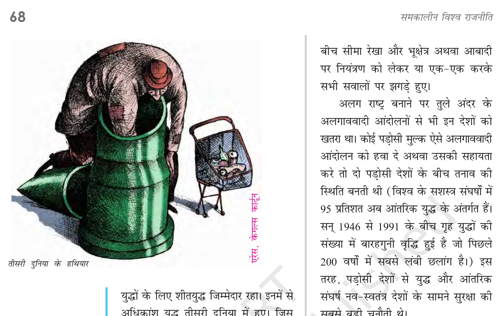
एनसीईआरटी विचार / कार्टून संदर्भ (NCERT Page 68):
एनसीईआरटी पाठ्यपुस्तक वक्तव्य: "जो अपने ही देश के खिलाफ लड़ते हैं निश्चित ही वे किन्हीं बातों से नाखुश होते हैं। शायद यह उनकी असुरक्षा ही है जो देश के लिए असुरक्षा पैदा करती है।"
सांख्यिकी: विश्व के सशस्त्र संघर्षों में 95 प्रतिशत अब आंतरिक युद्ध (गृहयुद्ध) के अंतर्गत आते हैं। 1946 से 1991 के बीच गृहयुद्धों की संख्या में 12 गुनी वृद्धि हुई है जो पिछले 200 वर्षों में सबसे लंबी छलांग है।
तीसरी दुनिया के अधिकांश युद्धों के लिए शीतयुद्ध भी जिम्मेदार रहा। महाशक्तियों ने तीसरी दुनिया के देशों के आंतरिक विवादों में हस्तक्षेप किया, विद्रोही गुटों को हथियार और पैसा मुहैया कराया और इन युद्धों को लंबे समय तक जारी रखा।
गृहयुद्ध (Civil War): किसी देश के भीतर ही सरकार और विद्रोही सशस्त्र समूहों के बीच होने वाला भीषण संघर्ष जो देश की आंतरिक अखंडता के लिए सबसे बड़ा खतरा बन जाता है।
एनसीईआरटी छात्र विचार: "तीसरी दुनिया के हथियारों और युद्धों के लिए शीतयुद्ध जिम्मेदार रहा। इनमें से अधिकांश युद्ध तीसरी दुनिया में हुए।"
सुरक्षा की पारंपरिक धारणा में स्वीकार किया जाता है कि हिंसा का इस्तेमाल यथासंभव सीमित होना चाहिए। 'न्याय-युद्ध' की यूरोपीय परंपरा का ही यह परिवर्ती विस्तार है कि आज लगभग पूरा विश्व मानता है कि किसी देश को युद्ध उचित कारणों यानी आत्म-रक्षा अथवा दूसरों को जनसंहार से बचाने के लिए ही करना चाहिए। युद्ध में बल प्रयोग तभी किया जाए जब बाकी उपाय असफल हो गए हों।
निशस्त्रीकरण की मांग होती है कि सभी राज्य कुछ खास किस्म के हथियारों को पूरी तरह छोड़ दें:
- जैविक हथियार संधि (BWC 1972): 155 से अधिक देशों ने 1972 की जैविक हथियार संधि (Biological Weapons Convention) पर दस्तखत किए और इन हथियारों को बनाने व रखने पर रोक लगाई।
- रासायनिक हथियार संधि (CWC 1993): 181 से अधिक देशों ने 1993 की रासायनिक हथियार संधि (Chemical Weapons Convention) पर हस्ताक्षर किए।
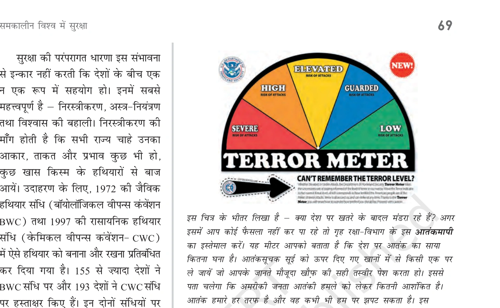
एनसीईआरटी कार्टून: हथियारों का विरोधाभास और सुरक्षा (NCERT Page 69):
एनसीईआरटी पाठ्यपुस्तक वक्तव्य: "वाह रे! पहले तो इन लोगों ने ये मारक और महंगे हथियार बनाए, फिर इन हथियारों से खुद को बचाने के लिए ये जटिल संधियां कीं। इसे कहते हैं सुरक्षा!"
कार्टून में प्रश्न: "क्या देश पर खतरे के बादल मंडरा रहे हैं? अगर इसमें आप कोई फैसला नहीं कर पा रहे तो गृह युद्ध में कूद पड़िए।"
अस्त्र नियंत्रण के अंतर्गत हथियारों के अधिग्रहण और उनके विकास पर कुछ नियम-कानून लागू किए जाते हैं:
- परमाणु अप्रसार संधि (NPT 1968): जिन देशों ने 1967 से पहले परमाणु हथियार बना लिए थे उन्हें ही इन्हें रखने की अनुमति दी गई। भारत ने इसे भेदभावपूर्ण माना।
- एन्टी-बैलिस्टिक मिसाइल संधि (ABM Treaty 1972): अमेरिका और सोवियत संघ ने रक्षात्मक मिसाइल प्रणालियों पर रोक लगाई।
- SALT और START संधियां: सामरिक अस्त्र परिसीमन वार्ता (SALT I & II) और सामरिक अस्त्र न्यूनीकरण संधि (START I & II)।
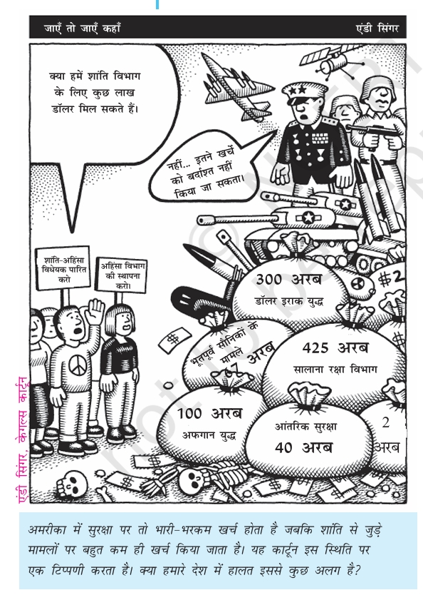
एनसीईआरटी कार्टून: विशाल रक्षा बजट बनाम शांति (Andy Singer, Cagle Cartoon - NCERT Page 70):
कार्टून का विवरण: कार्टून में विशाल रक्षा खर्चों (जैसे इराक युद्ध पर 300 अरब डॉलर, रक्षा विभाग पर 425 अरब डॉलर, अफगान युद्ध पर 100 अरब डॉलर) के सामने नागरिकों को तख्तियां लिए दिखाया गया है—"अहिंसा विभाग की स्थापना करो! शांति-अहिंसा विधेयक पारित करो!"
पारंपरिक सुरक्षा का एक तरीका विश्वास बहाली के उपाय (CBMs) भी है। इससे दो देशों के बीच इस बात की आश्वस्ति बनती है कि कोई भी पक्ष अचानक हमला नहीं करेगा। इसमें दोनों देश अपनी सैन्य योजनाओं और युद्धाभ्यासों के बारे में एक-दूसरे को पूर्व सूचना देते हैं।
सुरक्षा की अपारंपरिक धारणा सिर्फ राज्यों की सुरक्षा तक सीमित नहीं रहती, बल्कि इसमें व्यक्तियों और मानव समूहों को भी शामिल किया जाता है। इसे 'मानव सुरक्षा' (Human Security) अथवा 'मानवता की सुरक्षा' कहा जाता है।
मानव सुरक्षा की धारणा में सुरक्षा किसकी, किन खतरों से और सुरक्षा के तरीके क्या हैं—इन तीनों पर सवाल उठाया जाता है:
- संकीर्ण अर्थ (भय से मुक्ति - Freedom from Fear): इस पर जोर देने वाले विद्वान व्यक्तियों को हिंसक खतरों यानी खून-खराबे से बचाने पर बल देते हैं। संयुक्त राष्ट्र संघ के पूर्व महासचिव कोफी अन्नान के शब्दों में—"मानव सुरक्षा का लक्ष्य व्यक्तियों को हिंसक खतरों से बचाना है।"
- व्यापक अर्थ (अभाव से मुक्ति - Freedom from Want): इसमें भूख, बीमारी, प्राकृतिक आपदाओं, गरीबी और अभाव से मुक्ति को भी सुरक्षा में शामिल किया जाता है।
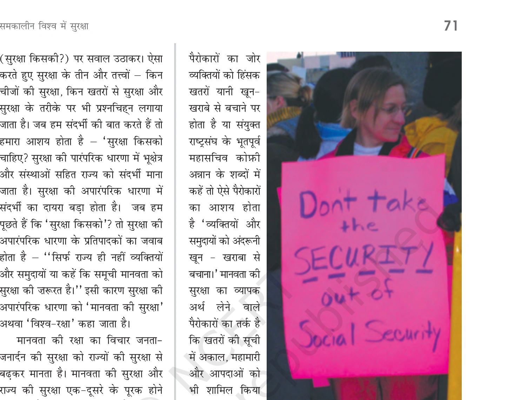
एनसीईआरटी कार्टून: आम इंसान की असली सुरक्षा (NCERT Page 71):
एनसीईआरटी पाठ्यपुस्तक वक्तव्य: "अब लग रहा है कि बात हो रही है! इसे ही मैं सचमुच के आदमी के लिए सचमुच की सुरक्षा कहता हूँ।" यह कार्टून मानव सुरक्षा (भूख, गरीबी और हिंसा से मुक्ति) की आवश्यकता को रेखांकित करता है।
मानवाधिकारों के हनन और उल्लंघन से उपजी असुरक्षा से निपटने के लिए मानवाधिकारों को तीन कोटियों में वर्गीकृत किया जाता है:
- प्रथम कोटि: राजनीतिक अधिकार (जैसे सभा करने, संगठन बनाने और अभिव्यक्ति की स्वतंत्रता)।
- द्वितीय कोटि: आर्थिक और सामाजिक अधिकार (जैसे काम करने, न्यूनतम जीवन स्तर और सामाजिक सुरक्षा का अधिकार)।
- तृतीय कोटि: औपनिवेशीकृत जनता अथवा जातीय और मूलवासी अल्पसंख्यकों के अधिकार।
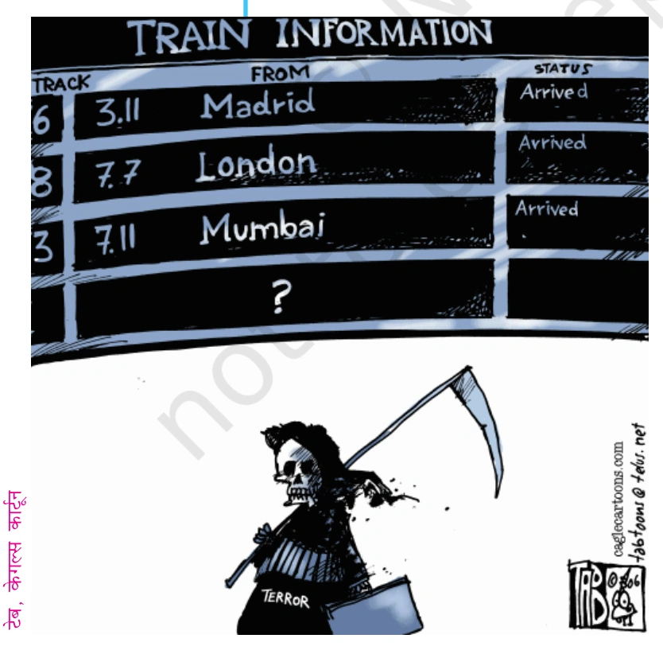
एनसीईआरटी कार्टून: मानवाधिकार उल्लंघन और दोहरा रवैया (Tab, Cagle Cartoon - NCERT Page 72):
एनसीईआरटी पाठ्यपुस्तक प्रश्न: "मानवाधिकारों के उल्लंघन की बात हो तो हम हमेशा बाहर क्यों देखते हैं? क्या हमारे अपने देश में इसके उदाहरण नहीं मिलते?"
1990 के दशक में 'विश्व-सुरक्षा' (Global Security) की धारणा उभरी। कोई भी देश इन समस्याओं का समाधान अकेले नहीं कर सकता। खतरों के नए स्रोतों में सबसे प्रमुख है—वैश्विक निर्धनता (Global Poverty) और जन-पलायन।
विश्व में जनसंख्या वृद्धि और आय के बीच गहरा असंतुलन है:
- उत्तरी गोलार्द्ध के देश: विकसित देशों में जनसंख्या कम है और प्रति व्यक्ति आय बहुत अधिक है।
- दक्षिणी गोलार्द्ध के देश: विकासशील देशों में जनसंख्या बहुत तेजी से बढ़ रही है और 21वीं सदी के मध्य तक इसके दुगुने होने की संभावना है, जबकि प्रति व्यक्ति आय बेहद कम है।
एनसीईआरटी पाठ्यपुस्तक के अनुसार अमीर और गरीब देशों के बीच जीवन स्तर का अंतर तालिका में स्पष्ट है:
| क्षेत्र / देश |
जन्म के समय आयु-प्रत्याशा |
शिशु मृत्यु दर / बाल-मृत्यु |
| स्वीडन (विकसित देश) |
70 वर्ष से अधिक (आय > $1000) |
1000 में से केवल 3 मौतें |
| भारतीय उपमहाद्वीप |
मध्यम जीवन स्तर |
प्रत्येक 7 शिशुओं में 1 की मौत |
| सहारा मरुस्थल के दक्षिणी अफ्रीकी देश |
केवल 40 वर्ष (अत्यंत कम) |
प्रत्येक 5 शिशुओं में 1 की मौत (20%) |
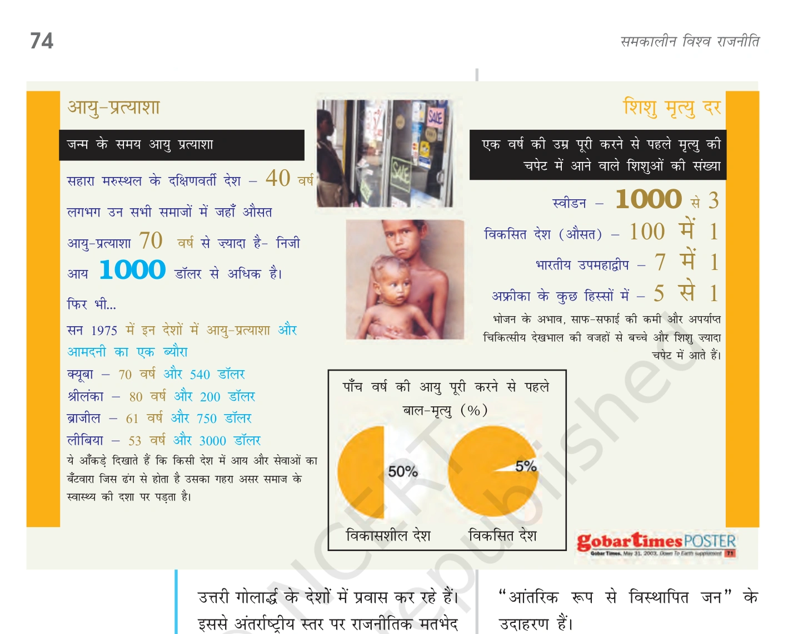
एनसीईआरटी मानचित्र एवं सांख्यिकी: अफ्रीका में विस्थापन (NCERT Page 74):
एनसीईआरटी पाठ्यपुस्तक वक्तव्य: "अफ्रीका का एक मानचित्र लीजिए और जनता की सुरक्षा पर मंडराते विभिन्न खतरों को इस मानचित्र पर चिह्नित कीजिए। 'आंतरिक रूप से विस्थापित जन' के उदाहरण। विश्व का शरणार्थी-मानचित्र विश्व के संघर्ष-मानचित्र से लगभग हू-ब-हू मेल खाता है क्योंकि दक्षिणी गोलार्द्ध के देशों में सशस्त्र संघर्षों के कारण बड़े पैमाने पर विस्थापन होता है।"
जन-पलायन के कारण अंतर्राष्ट्रीय राजनीति में दो भिन्न प्रकार के समूह बनते हैं:
(i) शरणार्थी (Refugees): युद्ध, प्राकृतिक आपदा अथवा राजनीतिक उत्पीड़न के कारण जो लोग अपना देश छोड़कर दूसरे देशों में शरण लेते हैं। अंतर्राष्ट्रीय कानून के तहत इन्हें सुरक्षा मिलती है।
(ii) आंतरिक रूप से विस्थापित जन (Internally Displaced Persons): वे लोग जो हिंसा या आपदा के कारण अपना घर-बार छोड़ते हैं परंतु अपने देश की सीमाओं के भीतर ही बने रहते हैं। (जैसे 1990 के दशक में कश्मीर घाटी छोड़ने वाले कश्मीरी पंडित)।
गैर-पारंपरिक सुरक्षा के अंतर्गत खतरे के नए स्रोतों में आतंकवाद (Terrorism), महामारियां (Epidemics) और वैश्विक तापवृद्धि (Global Warming) भी शामिल हैं जो किसी एक देश की सीमा तक सीमित नहीं हैं।
आतंकवाद का आशय राजनीतिक हिंसा से है जो जानबूझकर और बिना किसी मुरौवत के आम नागरिकों को अपना निशाना बनाती है।
- इसका उद्देश्य समाज में दहशत फैलाना और सरकार की नीति को बदलना होता है।
- विमान का अपहरण, भीड़भरे स्थानों पर बम विस्फोट और सार्वजनिक इमारतों पर हमला इसके सामान्य तरीके हैं।
- 9/11 की घटना: 11 सितंबर 2001 को अमेरिका में हुए हमलों के बाद आतंकवाद को विश्व स्तर पर सुरक्षा का मुख्य मुद्दा माना जाने लगा।
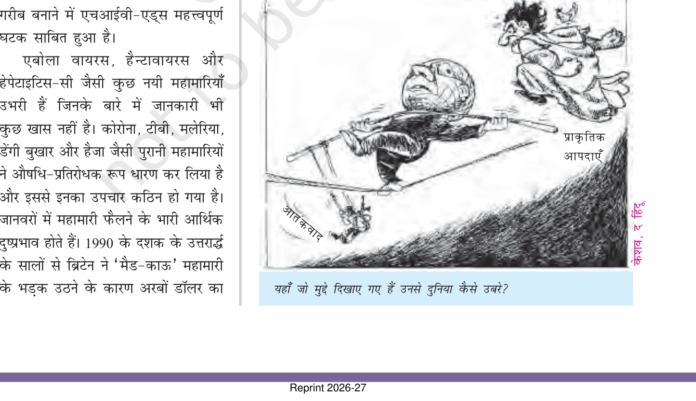
एनसीईआरटी कार्टून: मानवता पर तीन वैश्विक संकट (Keshav, The Hindu - NCERT Page 75):
एनसीईआरटी पाठ्यपुस्तक प्रश्न: "यहाँ जो मुद्दे दिखाए गए हैं (आतंकवाद, प्राकृतिक आपदाएं, महामारी) उनसे दुनिया कैसे उबरे?"
HIV-AIDS, बर्ड फ्लू और सार्स (SARS - Severe Acute Respiratory Syndrome) जैसी महामारियां आव्रजन, व्यवसाय, पर्यटन और सैन्य अभियानों के जरिए तेजी से फैलती हैं:
- दक्षिणी अफ्रीकी देशों में HIV-AIDS का गंभीर खतरा है। बोत्सवाना में 3 में से 1 व्यक्ति और दक्षिण अफ्रीका में 6 में से 1 व्यक्ति इस रोग से पीड़ित है।
- बर्ड फ्लू के कारण कई दक्षिण एशियाई देशों को मुर्ग-निर्यात बंद करना पड़ा।
- इबोला, हंतावायरस, हेपेटाइटिस सी और कोविड-19 ने सिद्ध किया कि महामारियों से निपटने के लिए अंतर्राष्ट्रीय सहयोग आवश्यक है।
वैश्विक तापवृद्धि से पर्यावरण को भारी खतरा है क्योंकि समुद्र तल के ऊँचा उठने से मालदीव और बांग्लादेश का ज्यादातर हिस्सा डूब जाएगा और करोड़ों लोग बेघर होंगे।
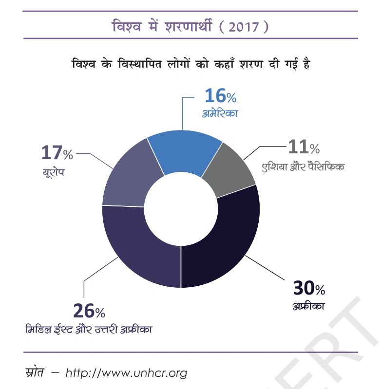
एनसीईआरटी चार्ट: शरणार्थियों को शरण (UNHCR Data 2017 - NCERT Page 76):
मानचित्र डेटा: विश्व के विस्थापित लोगों को शरण दिए जाने के आंकड़े—17% यूरोप, 30% अफ्रीका, 26% एशिया और पैसिफिक, तथा मिडिल ईस्ट एवं उत्तरी अफ्रीका। (स्रोत: http://www.unhcr.org)
सुरक्षा पर मंडराते अपारंपरिक खतरों से निपटने के लिए सैन्य-संघर्ष की नहीं बल्कि सहयोग (Cooperative Security) की जरूरत है। आतंकवाद से लड़ने या पर्यावरण बचाने में सैन्य बल से काम नहीं लिया जा सकता।
सहयोगात्मक सुरक्षा में अंतर्राष्ट्रीय स्तर पर द्विपक्षीय, क्षेत्रीय और वैश्विक स्तर की संस्थाएं काम करती हैं:
- अंतर्राष्ट्रीय संस्थाएं: संयुक्त राष्ट्र संघ, विश्व बैंक, विश्व स्वास्थ्य संगठन (WHO)।
- गैर-सरकारी संगठन और हस्तियां: एमनेस्टी इंटरनेशनल, रेडक्रॉस तथा नेल्सन मंडेला व मदर टेरेसा जैसी हस्तियां।
- बल प्रयोग का इस्तेमाल केवल अंतिम उपाय के रूप में और अंतर्राष्ट्रीय समुदाय की सहमति (UN सुरक्षा परिषद) से ही होना चाहिए।
एनसीईआरटी पाठ्यपुस्तक वक्तव्य: "व्यवसायिक संगठन और निगम तथा जानी-मानी हस्तियां (जैसे नेल्सन मंडेला, मदर टेरेसा) सहयोगात्मक सुरक्षा में शामिल हो सकती हैं।"
भारत की सुरक्षा रणनीति के चार प्रमुख घटक हैं:
- सैन्य क्षमता को मजबूत करना: भारत ने अपने पड़ोसियों से हुए युद्धों के कारण अपनी सैन्य ताकत बढ़ाई और 1974 व 1998 में परमाणु परीक्षण किए।
- अंतर्राष्ट्रीय नियमों को मजबूत करना: भारत ने अंतर्राष्ट्रीय संस्थाओं और नियमों (जैसे गुटनिरपेक्षता, UN शांति अभियान, परमाणु निशस्त्रीकरण) को मजबूत करने की वकालत की।
- आंतरिक सुरक्षा चुनौतियों से निपटना: नागालैंड, मिजोरम, पंजाब और कश्मीर जैसे क्षेत्रों के अलगाववादी आंदोलनों से लोकतांत्रिक तरीके से निपटना और राष्ट्रीय एकता बनाए रखना।
- आर्थिक विकास और गरीबी उन्मूलन: भारतीय अर्थव्यवस्था को इस तरह विकसित करना कि नागरिकों को गरीबी और अभाव से निजात मिले तथा आर्थिक असमानता न बढ़े।
🧩 एनसीईआरटी गतिविधि: कोटाबाग नदी जल विवाद खेल (NCERT Page 78)
सिमुलेशन का विवरण: नदी के किनारे चार गांव बसे हैं—कोटाबाग (Kotabagh), गेवली (Gewali), कंडली (Kandli) और गोइप्पा (Goippa)।
- कोटाबाग: नदी के किनारे सबसे पहले आकर बसा, प्राकृतिक संसाधनों पर इसकी अबाध पहुँच है।
- गेवली, कंडली, गोइप्पा: बाद में बसे, जो संसाधन और जल बंटवारे की सुरक्षा को लेकर चिंतित हैं।
एनसीईआरटी शिक्षक निर्देश: "गांवों को राष्ट्र के रूप में वर्णित करें और सुरक्षा/खतरे की समस्याओं को प्राकृतिक संसाधनों तक पहुंच और क्षेत्रीय अखंडता से जोड़ें।"
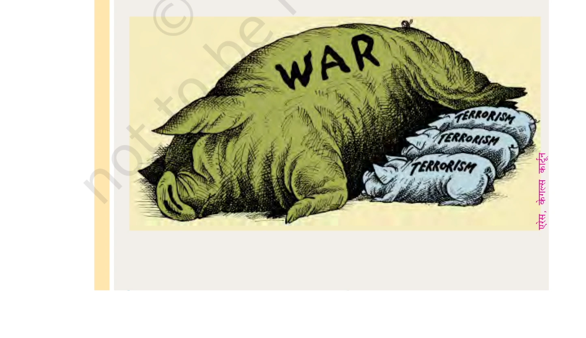
एनसीईआरटी प्रश्न 12 / कार्टून (Ares, Cagle Cartoon - NCERT Page 80):
एनसीईआरटी पाठ्यपुस्तक प्रश्न: "नीचे दिए गए कार्टून को समझें। कार्टून में युद्ध और आतंकवाद का जो संबंध दिखाया गया है उसके पक्ष या विपक्ष में एक संक्षिप्त टिप्पणी लिखिए।"
Q1. सुरक्षा की परंपरागत धारणा का मुख्य केंद्र क्या है?
उत्तर: सैन्य खतरा (Military Threat)।
Q2. परमाणु अप्रसार संधि (NPT) किस वर्ष हुई थी?
उत्तर: 1968 में।
Q3. 'अपरोध' (Deterrence) का क्या अर्थ है?
उत्तर: युद्ध को रोकने के लिए अपनी सैन्य शक्ति का प्रदर्शन करना।
Q4. 'हान नदी का चमत्कार' किस देश की सुरक्षा और आर्थिक प्रगति से जुड़ा है?
उत्तर: दक्षिण कोरिया।
Q5. वैश्विक तापवृद्धि (Global Warming) सुरक्षा की किस धारणा के अंतर्गत आती है?
उत्तर: अपारंपरागत या वैश्विक सुरक्षा।
Q6. निशस्त्रीकरण (Disarmament) और अस्त्र नियंत्रण (Arms Control) में क्या अंतर है?
उत्तर: निशस्त्रीकरण का अर्थ है हथियारों को पूरी तरह नष्ट करना, जबकि अस्त्र नियंत्रण का अर्थ है हथियारों की संख्या और उनके प्रयोग के लिए नियम बनाना।
Q7. 'मानवीय सुरक्षा' (Human Security) के दो मुख्य घटक क्या हैं?
उत्तर: 1. अभाव से मुक्ति (Freedom from Want), 2. डर से मुक्ति (Freedom from Fear)।
Q8. 'विश्वास बहाली के उपाय' (Confidence Building Measures) क्या हैं?
उत्तर: देशों के बीच अविश्वास को कम करने के लिए अपनी सैन्य गतिविधियों की जानकारी साझा करना।
Q9. भारत की सुरक्षा रणनीति के किन्हीं दो घटकों के नाम लिखें।
उत्तर: 1. अपनी सैन्य क्षमता को मजबूत करना, 2. आंतरिक समस्याओं का लोकतांत्रिक तरीके से समाधान करना।
Q10. परंपरागत और अपारंपरागत सुरक्षा में क्या अंतर है? उदाहरणों सहित विस्तार से समझाएं।
उत्तर:
1. **परंपरागत सुरक्षा:** यह सैन्य खतरों, राष्ट्र-राज्य की रक्षा और सीमाओं पर केंद्रित है। उदाहरण — युद्ध, शक्ति संतुलन।
2. **अपारंपरागत सुरक्षा:** यह पूरी मानवता की रक्षा, गरीबी, महामारी और मानवाधिकारों पर केंद्रित है। उदाहरण — ग्लोबल वार्मिंग, आतंकवाद, भुखमरी।
Q11. 21वीं सदी में सुरक्षा के नए खतरों (जैसे आतंकवाद और साइबर युद्ध) की चर्चा करें।
उत्तर:
1. **आतंकवाद:** निर्दोष लोगों को हिंसक तरीकों से डराना।
2. **साइबर युद्ध:** डिजिटल बुनियादी ढांचे को हैक करके देश को पंगु बनाना।
3. **पलायन:** बढ़ती शरणार्थी समस्या।
4. **महामारियां:** नई बीमारियों का तेज़ी से फैलना (जैसे कोविड-19)।
अगले भाग में हम **बोर्ड परीक्षा विशेष (Previous Year Questions)** और नक्शों (Maps) को देखेंगे।
इस अध्याय से जुड़े स्थान और देश जिन्हें मैप पर पहचानना ज़रूरी है:
मैप पर पहचानें:
- वह देश जो आतंकवाद के खिलाफ 'ग्लोबल वॉर ऑन टेरर' (Global War on Terror) का नेतृत्व कर रहा है: अमेरिका।
- विश्व का एकमात्र देश जिस पर परमाणु हमला हुआ: जापान।
- वह देश जहाँ 2001 में अल-कायदा ने 9/11 का हमला किया: अमेरिका (न्यूयॉर्क/वाशिंगटन)।
- भारत के दो परमाणु संपन्न पड़ोसी देश: पाकिस्तान और चीन।
- निशस्त्रीकरण की संधियों (जैसे START) में शामिल प्रमुख गुट: अमेरिका और रूस।
बोर्ड परीक्षा में बार-बार पूछे जाने वाले प्रश्न:
2019-2023 के प्रमुख प्रश्न:
- Q1. परंपरागत और अपारंपरागत सुरक्षा धारणाओं के बीच कोई चार अंतर स्पष्ट करें। (4 अंक)
- Q2. भारत की सुरक्षा रणनीति के चार प्रमुख घटकों का विस्तार से वर्णन करें। (6 अंक)
- Q3. 'अस्त्र नियंत्रण' (Arms Control) की दिशा में की गई किन्हीं दो संधियों (जैसे NPT, SALT) के बारे में बताएं। (4 अंक)
- Q4. 'आतंकवाद' वैश्विक सुरक्षा के लिए किस प्रकार एक गंभीर चुनौती है? (6 अंक)
2014-2018 के प्रमुख प्रश्न:
- Q5. 'अपरोध' (Deterrence) की नीति ने किस प्रकार बड़े युद्धों को रोकने में मदद की है? (2 अंक)
- Q6. वैश्वीकरण के दौर में सुरक्षा के नए खतरों (जैसे पलायन और साइबर युद्ध) की चर्चा करें। (4 अंक)
- Q7. भारत ने एन.पी.टी. (NPT) पर हस्ताक्षर क्यों नहीं किए? इसके पीछे के तर्क दें। (4 अंक)
- Q8. क्या जलवायु परिवर्तन (Climate Change) एक सुरक्षा संकट है? तर्क सहित उत्तर दें। (6 अंक)
- सुरक्षा की परिभाषा: हमेशा परंपरागत और अपारंपरागत धारनाओं के अंतर को याद रखें।
- भारत: पोखरण परमाणु परीक्षण और भारत की गुटनिरपेक्ष नीति पर विशेष ध्यान दें।
- संधियां: NPT, BWC, और CWC के वर्षों को रट लें।
- आतंकवाद: 9/11 की घटना और उसके वैश्विक प्रभाव को अच्छी तरह समझ लें।
अध्याय 5 का मास्टर कोर्स संपन्न। अब आप बोर्ड परीक्षा के लिए पूरी तरह से तैयार हैं!